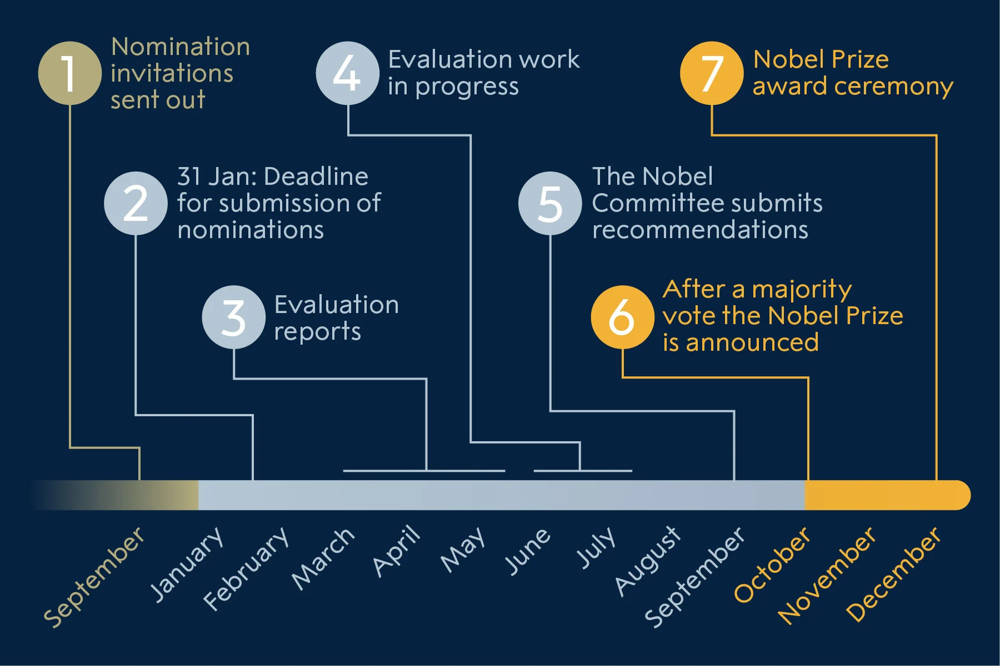

Nomination and selection of medicine laureates
Nomination to the Nobel Prize in Physiology or Medicine is by invitation only. The names of the nominees and other information about the nominations and selection process cannot be revealed until 50 years later.
Process of nomination and selection
The Nobel Committee sends confidential invitation letters to persons who are competent and qualified to nominate candidates for the Nobel Prize in Physiology or Medicine.
Qualified nominators
The right to submit proposals for the Nobel Prize in Physiology or Medicine is laid down in the Statutes of the Nobel Foundation. Those entitled to nominate are:
- Members of the Nobel Assembly at Karolinska Institutet, Stockholm;
- Swedish and foreign members of the Medicine and Biology classes of the Royal Swedish Academy of Sciences;
- Nobel Prize laureates in physiology or medicine and chemistry;
- Members of the Nobel Committee not qualified under paragraph 1 above;
- Holders of established posts as full professors at the faculties of medicine in Sweden and holders of similar posts at the faculties of medicine or similar institutions in Denmark, Finland, Iceland and Norway;
- Holders of similar posts at no fewer than six other faculties of medicine at universities around the world, selected by the Nobel Assembly, with a view to ensuring the appropriate distribution of the task among various countries.
- Scientists whom the Nobel Assembly may otherwise see fit to approach.
- No self-nominations are considered.
Selection of Nobel Prize laureates
The Nobel Assembly at Karolinska Institutet is responsible for the selection of the Nobel Prize laureates in physiology or medicine from among the candidates recommended by the Nobel Committee for Physiology or Medicine. The Nobel Assembly has 50 members. The Nobel Committee is the working body that reviews the nominations and selects the candidates. It consists of five members and the Secretary of the Nobel Committee and Nobel Assembly.
Who is eligible for the Nobel Prize in Physiology or Medicine?
Candidates eligible for the medicine prize are those nominated by nominators who have received an invitation from the Nobel Committee to submit names for consideration. No one can nominate herself or himself.
How are the Nobel Prize laureates selected?
The Nobel Prize for Physiology or Medicine is awarded for discovery of major importance in life science or medicine. Discoveries that have changed the scientific paradigm and are of great benefit for humankind are awarded the prize, whereas life time achievements or scientific leadership cannot be considered for the Nobel Prize.
Below is a brief description of the selecting process of the Nobel Prize laureates in physiology or medicine.
September – Invitation to nominate sent out. Over 3000 personal confidential invitations sent out to qualified nominators.
February – Deadline for submission. The completed forms must reach the Nobel Committee no later than 31 January of the following year.
March-May – Evaluation reports. The Nobel Committee invites international reputable experts to prepare evaluation reports.
June-August – Evaluation work in progress. Reports submitted by middle of August.
September – The Nobel Committee submits recommendations. The Nobel Committee submits recommendations on presumable candidates for discussion in the Nobel Assembly.
October – The Nobel Prize in physiology or medicine is announced. The Nobel Assembly chooses the Nobel Prize laureates in physiology or medicine through a majority vote on the first Monday in October. The decision is final and without appeal. The Nobel Prize laureates are informed immediately afterwards and the decision is then announced at the press conference.
December – The Nobel Prize award ceremony. The Nobel Prize award ceremony takes place on the 10th of December in Stockholm, where the Nobel Prize laureates receive the Nobel Prize medal, diploma and the prize amount.
Are the nominations made public?
The statutes of the Nobel Foundation restrict disclosure of information about the nominations and selecting process for 50 years.
Search the nomination archive
Contact the Nobel Assembly at Karolinska InstitutetRead more about how the Nobel Prize laureates are nominated:
Nomination of the physics laureatesNomination of the chemistry laureates
Nomination of the medicine laureates
Nomination of the literature laureates
Nomination of the peace laureates